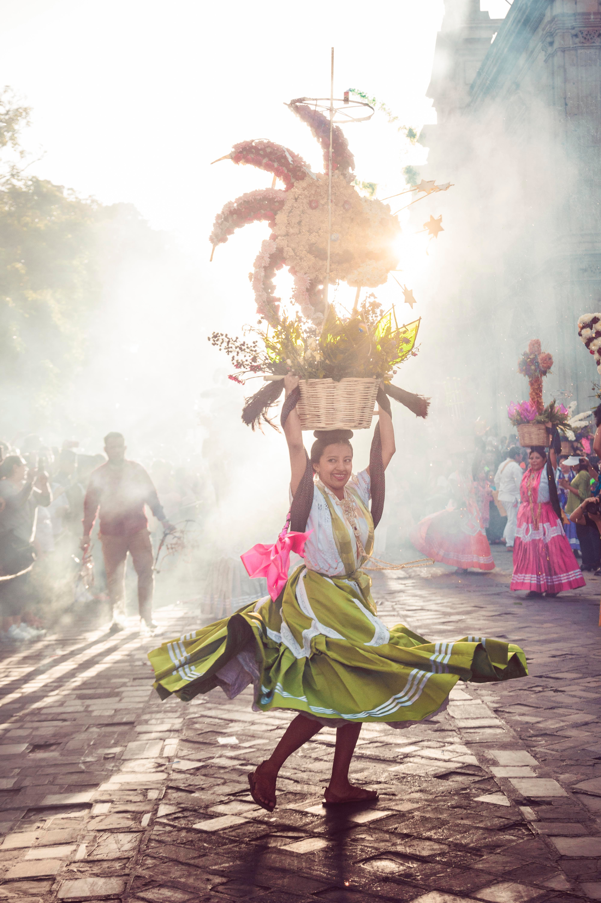

There are dozens of different potato varieties. They are usually described as early, second early and main crop
There are dozens of different potato varieties. They are usually described as early, second early and main crop
There are dozens of different potato varieties. They are usually described as early, second early and main crop
There are twenty types of different potatoes
There are dozens of different potato varieties. They are usually described as early, second early and main crop
There are dozens of different potato varieties. They are usually described as early, second early and main crop
There are dozens of different potato varieties. They are usually described as early, second early and main crop
There are dozens of different potato varieties. They are usually described as early, second early and main crop
There are dozens of different potato varieties. They are usually described as early, second early and main crop
primary color
primary darker
primary lighter
secondary color
Green fields
Summer Time!More Information

Have a Good Day!

DancersAs you stroll past the Cathedral Metropolitana in Mexico City, you'll most likely hear a percussion-led rhythm. When you do spot them, you'll see elaborately dressed dancers with elaborate headdresses with long feathers dancing passionately to the music. These dancers are commonly known as Aztec Dancers.

The Angel of IndependenceMost commonly known by the shortened name El Ángel and officially known as Monumento a la Independencia, is a victory column on a roundabout on the major thoroughfare of Paseo de la Reforma in downtown Mexico City. Get tickets to Mexico City Today!
“If you are distressed by anything external, the pain is not due to the thing itself, but to your estimate of it; and this you have the power to revoke at any moment.”- Marcus Aurelius, Meditations
"Education is the passport to the future, for tomorrow belongs to those who prepare for it today."- Malcom X
“Don't underestimate the power of vision and direction. These are irresistible forces, able to transform what might appear to be unconquerable obstacles into traversable pathways and expanding opportunities.”- Jordan Peterson
Inspirational Quotes